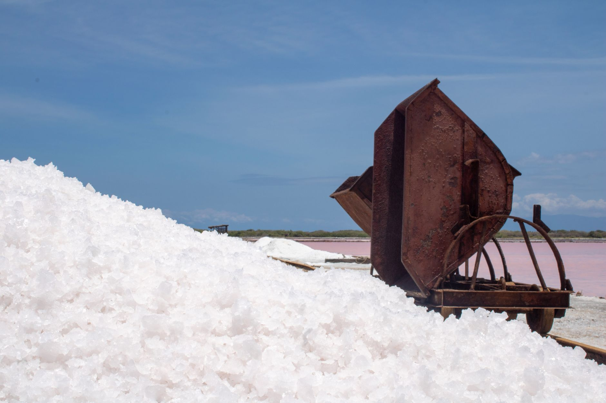

호주, 구리 사상 최고가·석탄 규제로 광물 시장 양극화

호주 광물 시장이 에너지 전환 흐름을 기점으로 뚜렷한 양극화를 보이고 있다. 인베스팅닷컴(Investing Commodities) 및 해외 광물 전문 매체 보도를 종합하면, 전기차 배선과 AI 데이터센터 전력망의 핵심 소재인 구리 가격은 사상 최고치를 경신하며 대규모 신규 투자를 끌어들이고 있다.
구리는 전기차 1대당 평균 60~80kg, 풍력터빈 1기당 수 톤이 투입되는 필수 금속이다. AI 데이터센터 전력 인프라 확충 수요까지 겹치며 공급 부족 우려가 가격을 끌어올리는 구조다. 호주는 세계 5위권 구리 생산국으로, 이 같은 가격 상승의 직접 수혜를 받는다.
반면 호주 주요 석탄 수출업체 얀콜(Yancoal)의 경우, 수출 물량의 31%를 중국, 27%를 일본, 12%를 대만에 공급하며 아시아 전력망을 떠받치고 있지만, 서방 ESG 규제와 금융기관의 석탄 투자 회피 기조가 강화되며 중장기 사업성이 압박받고 있다.
에너지 전환 맥락에서 호주 광물 포트폴리오의 무게 중심도 이동하고 있다. 리튬·코발트·니켈 등 배터리 핵심 광물과 구리 등 전도성 금속에 대한 신규 광산 개발 투자가 늘어나는 반면, 석탄과 천연가스 자산에 대한 신규 자본 유입은 감소세다.
한국 입장에서 호주 구리 가격 급등은 소부장 공급망에 직접적인 비용 압력으로 작용한다. 반도체 배선 공정에 쓰이는 구리 타겟 소재, PCB 동박, 전기차 모터 권선용 구리선 등의 원가가 연동되기 때문이다. 2026년 들어 국내 기판·동박판 가격이 20~30% 급등한 것(2026년 10월 10일 소재타임스 보도)도 이 같은 상류 가격 상승과 무관하지 않다.
배터리 재활용 분야에서는 구리 등 금속 회수의 경제성이 높아지면서 투자가 확대되고 있다. 리사이클링 투데이(Recycling Today, 2026년 10월 14일)에 따르면, 도로 위 차량이 10년 뒤 원자재 공급원이 된다는 인식 하에 배터리 재활용 및 신흥 시장 수거망 구축에 선제 투자하는 기업들이 유리한 위치를 점할 것으로 전망된다.
글로벌 광물 공급망 재편 측면에서 호주는 서방 동맹국 중 비중국 핵심 광물 공급 허브 역할을 강화하고 있다. 미국 DOE가 2026년 핵심 광물 공급망에 295억 달러를 투입(2026년 10월 5일 소재타임스 보도)하고, EU도 베트남 등 대안 공급처 확보에 나선 것과 같은 맥락이다.
호주 정부도 에너지 전환 광물 산업 육성을 위해 광산 개발 인허가 간소화, 희소금속 탐사 보조금 확대 등 정책 지원을 강화하고 있다. 특히 리튬·코발트·니켈의 경우 중국 의존도를 낮추려는 한국·일본·EU 배터리 기업들의 장기 구매 계약 수요가 증가하고 있다.
한편 AZoM 소재 전문 매체(2026년 10월 14일)에 따르면, 호주에서는 방산·의료용 정밀 금속 부품의 자국 내 제조 역량 확보를 위한 270만 달러 규모의 산업 주도 프로젝트가 출범했다. 이는 광물 채굴에 그치지 않고 소재 가공·부품 제조로 밸류체인을 확장하려는 전략적 방향 전환을 보여준다.
한국 소부장 기업 입장에서 호주 구리·배터리 광물 시장의 구조 변화는 원자재 조달 다변화 기회이자 비용 상승 리스크를 동시에 내포한다. 호주산 구리·리튬·니켈 등 장기 구매 계약 확보가 원가 변동성을 줄이는 핵심 전략으로 부상하고 있다.
구리 가격의 구조적 상승이 지속될 경우, 반도체 공정용 구리 타겟·도금액, 전기차용 평각 권선, 초전도 소재 등 구리 집약적 소재군의 가격 재편이 불가피하다. 중장기적으로 구리 절감 설계(알루미늄 대체, 박막화) 기술 개발 수요도 함께 높아질 전망이다.